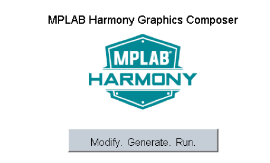
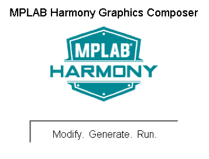

When power-on is successful, the demonstration will display a similar menu to that shown in the following figure (different configurations may have slight variation in the screen aspect ratio):

When Make changes. Generate. Run. is touched, the button will toggle with each individual touch. (Note: The aria_qs_e70_xu_xpro_spi configuration does not support touch input.)

For the SAM C21 Xplained Ultra board with Xplained Pro Display project, the demonstration will show the figure below on the display:

For the SAM E70 Xplained Ultra board with Xplained Pro Display project, the demonstration will display the figure below. The project does not support touch input.
For the SAM E54 Xplained Ultra board with Xplained Pro Display project, the demonstration will show the figure below on the display:
For the SAM A5D2 Xplained Ultra board, 4.3” WQVGA PCAP Touch Display project, the demonstration will show the figure below on the display:
When Make changes. Generate. Run. is touched, the button will toggle with each individual touch.
For the SAM A5D2 Xplained Ultra board, 5.0” WVGA PCAP Touch Display project, the demonstration will show the figure below on the display:
When Make changes. Generate. Run. is touched, the button will toggle with each individual touch.
|
MPLAB Harmony Graphics Library Help
|